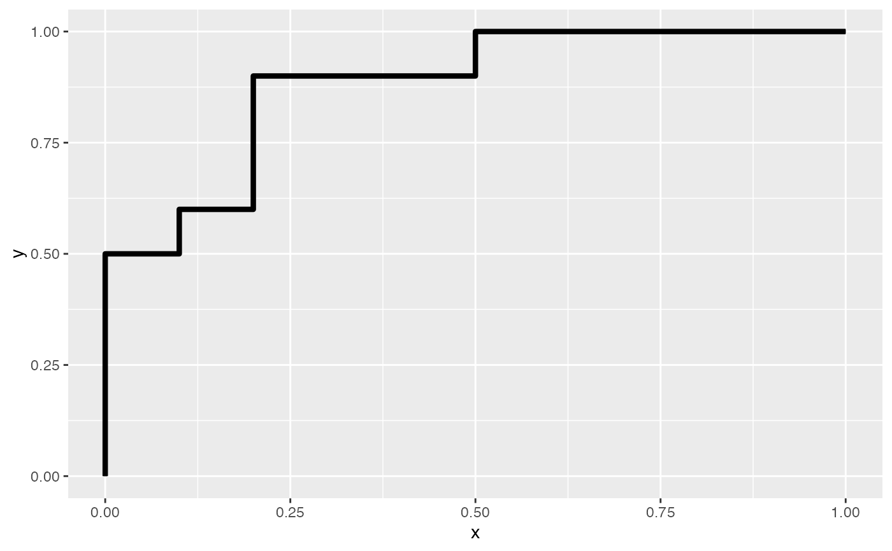
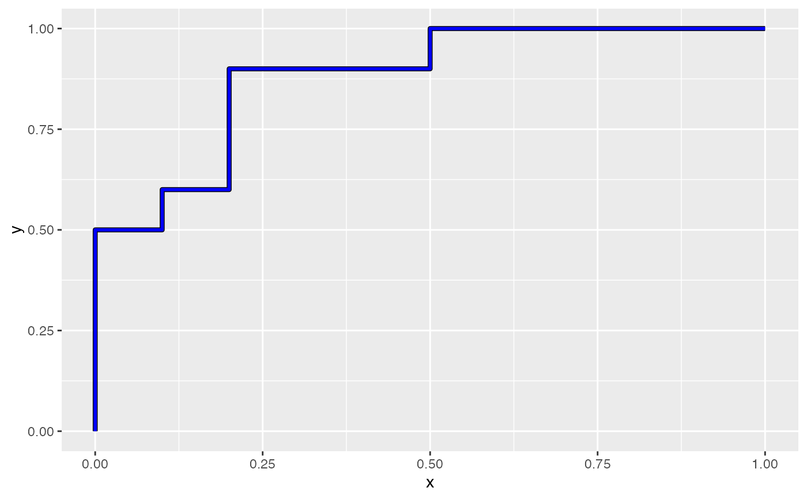
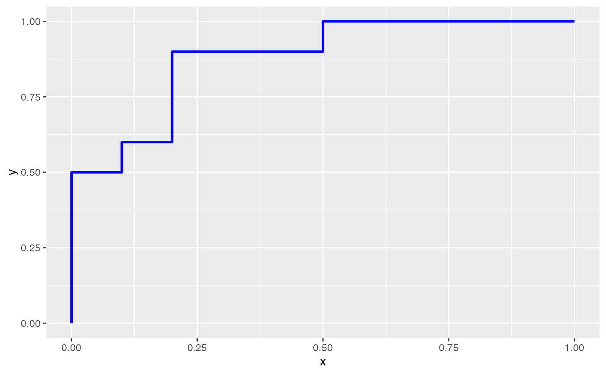
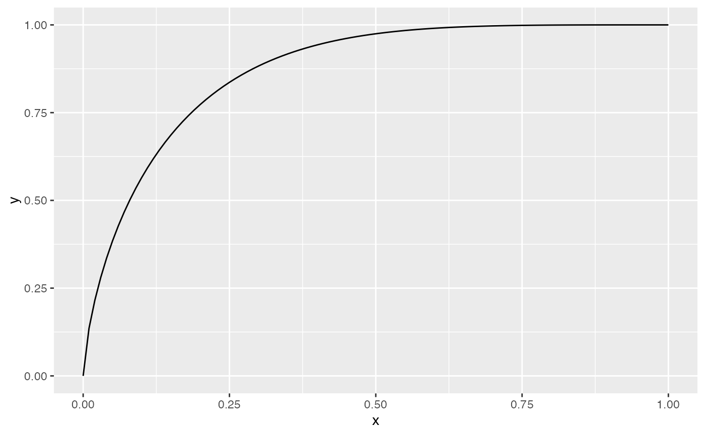
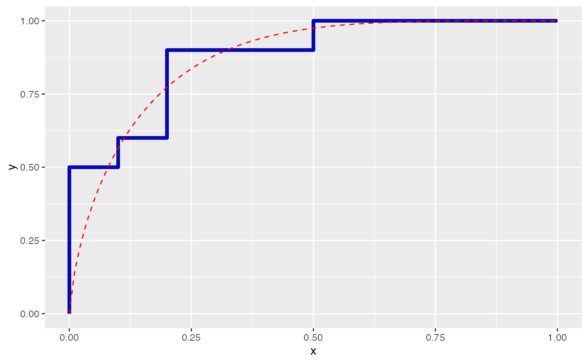
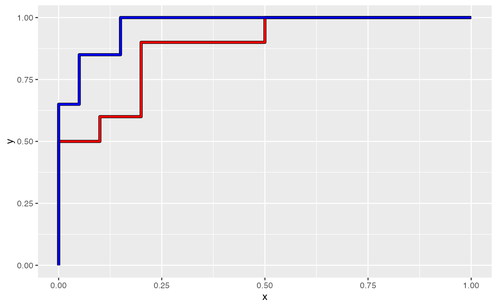

Plot a ROC Curve
geom_roc.RdCreate a "geom" layer to generate a receiver operator criterion (ROC)
curve in the ggplot2 style grammar of graphics.
Its primary input is the output of roc_xy(), and is used
primarily used in support of the wrapper plot_emp_roc().
Usage
geom_roc(
mapping = NULL,
data = NULL,
stat = "identity",
position = "identity",
na.rm = FALSE,
shape = NULL,
size = 2,
lwd = 1,
outline = TRUE,
show.legend = NA,
inherit.aes = TRUE,
...
)
geom_rocfit(
mapping = NULL,
data = NULL,
stat = "identity",
position = "identity",
...
)Arguments
- mapping
Set of aesthetic mappings created by
aes(). If specified andinherit.aes = TRUE(the default), it is combined with the default mapping at the top level of the plot. You must supplymappingif there is no plot mapping.- data
A
data.framecontaining "x" and "y" coordinates corresponding to an empirical ROC curve. This is result of a call toroc_xy(), and corresponds to the1 - "tnr"and"tpr"values respectively.- stat
The statistical transformation to use on the data for this layer. When using a
geom_*()function to construct a layer, thestatargument can be used to override the default coupling between geoms and stats. Thestatargument accepts the following:A
Statggproto subclass, for exampleStatCount.A string naming the stat. To give the stat as a string, strip the function name of the
stat_prefix. For example, to usestat_count(), give the stat as"count".For more information and other ways to specify the stat, see the layer stat documentation.
- position
A position adjustment to use on the data for this layer. This can be used in various ways, including to prevent overplotting and improving the display. The
positionargument accepts the following:The result of calling a position function, such as
position_jitter(). This method allows for passing extra arguments to the position.A string naming the position adjustment. To give the position as a string, strip the function name of the
position_prefix. For example, to useposition_jitter(), give the position as"jitter".For more information and other ways to specify the position, see the layer position documentation.
- na.rm
If
FALSE, the default, missing values are removed with a warning. IfTRUE, missing values are silently removed.- shape
numeric(1). Shape of points (between 0 and 25), similar topchofgraphics::points(). Seeggplot2::geom_point().- size
numeric(1). Size of points. Similar tocexofgraphics::points(). Modifyingsizewill not affect the plot ifshapeis set toNULL(the default). See [geom_point())].[geom_point())]: R:geom_point())
- lwd
numeric(1). Line width (seepar()).- outline
logical(1). Should black outlines be drawn around the main plot line?- show.legend
logical. Should this layer be included in the legends?
NA, the default, includes if any aesthetics are mapped.FALSEnever includes, andTRUEalways includes. It can also be a named logical vector to finely select the aesthetics to display. To include legend keys for all levels, even when no data exists, useTRUE. IfNA, all levels are shown in legend, but unobserved levels are omitted.- inherit.aes
If
FALSE, overrides the default aesthetics, rather than combining with them. This is most useful for helper functions that define both data and aesthetics and shouldn't inherit behaviour from the default plot specification, e.g.annotation_borders().- ...
Additional arguments passed to
ggplot2::layer(), oftenlty,shape,lwd, etc.
Examples
library(ggplot2)
# Generate dummy data
true <- rep(c("control", "disease"), each = 10)
pred <- withr::with_seed(8,
c(rnorm(10, mean = 0.4, sd = 0.2),
rnorm(10, mean = 0.6, sd = 0.2))
)
rocxy <- roc_xy(true, pred, "disease") |> data.frame()
# Plotting options
ggplot(rocxy, aes(x = x, y = y)) + geom_roc()

ggplot(rocxy, aes(x = x, y = y)) + geom_roc(col = "blue")

ggplot(rocxy, aes(x = x, y = y)) + geom_roc(col = "blue", outline = FALSE)

# Draw a fit line with `geom_rocfit()`
# (to add a fit-layer, you *must* pass the data argument)
ggplot(rocxy, aes(x = x, y = y)) + geom_rocfit(data = rocxy)

# Layer a fit line over a ROC curve
ggplot(rocxy, aes(x = x, y = y)) +
geom_roc(col = "blue") +
geom_rocfit(data = rocxy, col = "red", linetype = "dashed")

# Multiple curves can be drawn on the same plot.
# First, generate a 2nd set of dummy data
true2 <- rep(c("control", "disease"), each = 20)
pred2 <- withr::with_seed(9,
c(rnorm(20, mean = 0.4, sd = 0.2),
rnorm(20, mean = 0.8, sd = 0.2))
)
# Cast input to a data frame (this is required for ggplot)
rocxy2 <- roc_xy(true2, pred2, "disease") |> data.frame()
# The 2nd line can be added via standard `+` ggplot2 syntax,
# but the data argument must be passed for each geom, as each curve was
# generated from a unique dataset
ggplot() +
geom_roc(aes(x = x, y = y), data = rocxy, col = "red") +
geom_roc(aes(x = x, y = y), data = rocxy2, col = "blue")
